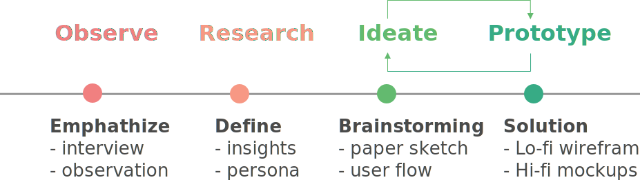
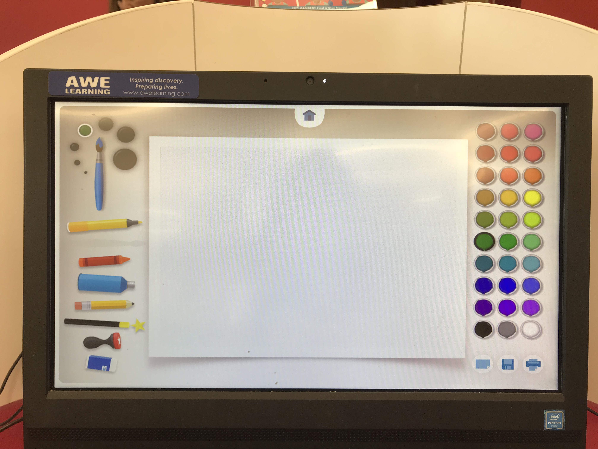
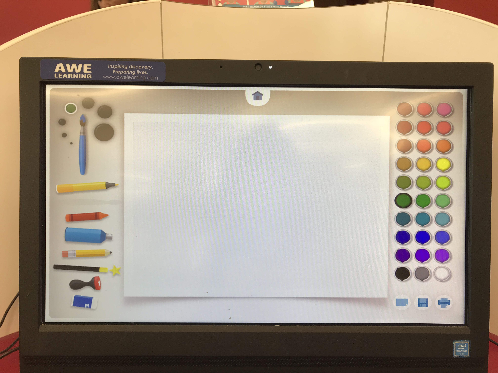

Artism
UI/UX Design
UI/UX Design

Artism is an educational technology provided for Autism children to learn about the social interaction meaning and emotions through social stories and art therapy. I worked as a team of two people, including design process included observation, interview, research, ideate, prototype, and design.
UX researcher, UX designer, UI designer
Wei Cheng, Yanbin Hao
Paper Prototyping, Balsamiq, Photoshop, Sketch, InVision
Interview, Observation, Wireframing
We applied the design thinking methodology as our process, but we changed a bit on the discover phase into observe and research because this project is based on the goal to create an educational technology for children and we want to open for other opportunities based on observing children in the real world.
We went to Austin Central Public Library to observe what kind of technology or game do most children like to play on the computers. I opened several games in different categories on the computers and wait for children to interactive with them. Including storybooks, math, and art game. It turns out that preschool children (3-5 years) likes to interact with the art related, language-free games. The child I observed was a 4-years old girl, the game she was playing is called PAINT.

 

We interviewed the mother of the little girl about the